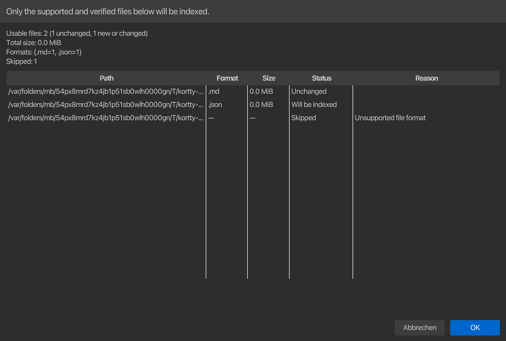

RAG Wissensspeicher¶
Ein Wissensspeicher ermöglicht es einem KI-Profil, mit relevanten Auszügen aus lokalen Dateien zu antworten, ohne die vollständige Quellsammlung an das Modell zu senden. Der Standardspeicher verwendet einen lokalen Kosinus-Ähnlichkeits-HNSW-Snapshot; Als optionaler zweiter Wissensspeicher-Typ steht ein bestehender Qdrant-Service zur Verfügung.

Erstellen Sie einen lokalen Wissensspeicher¶
Öffnen Sie KI > KI-Manager > Wissensspeicher und wählen Sie Erstellen. Der Anfänger-Flow benötigt einen Namen, ein installiertes Einbettungsmodell, Rollenzuweisungen und mindestens eine überprüfte Quelle. Speichertyp, Vektordimensionen und optionale Qdrant-Verbindungsfelder bleiben unter Erweitert ausgeblendet; korTTY verwaltet die lokalen HNSW-Graphparameter intern, sodass bei normaler Verwendung keine Vektorindexoptimierung erforderlich ist.

Wenn kein Einbettungsmodell installiert ist, öffnet derselbe Ablauf den Einrichtungsassistenten local-model mit vorab ausgewählter Einbettungsrolle. Installieren Sie das vorausgewählte Modell Qwen3-Embedding 0.6B Q8_0 oder wählen Sie eine der Katalogalternativen aus, die der Assistent für den Speicher dieses Computers anbietet – Qwen3-Embedding 4B oder 8B Q4_K_M auf Computern mit mindestens 16 oder 24 GiB, das mehrsprachige BGE-M3 Q8_0 oder das sehr kleine und schnelle Nomic Embed Text v1.5 Q8_0 – Kehren Sie dann zu Erstellen zurück. Ein Index ist an genau dieses Einbettungsmodell und die Dimensionsanzahl gebunden. Um eines davon zu ändern, muss es neu erstellt werden.
So fügen Sie Inhalte hinzu:
- Wählen Sie Dateien hinzufügen für eine oder mehrere einzelne Dateien oder Ordner hinzufügen für eine rekursive Verzeichnisquelle.
- Während korTTY die Auswahl auf einem Hintergrund-Worker scannt, bleibt die Registerkarte „Wissensspeicher“ reaktionsfähig und meldet Ausgewählte Dateien und Ordner werden überprüft…. Sie können diesen Scan abbrechen, bevor das Überprüfungsdialogfeld geöffnet wird.
- Überprüfen Sie die Vorschautabelle. In jeder Zeile werden Pfad, Format, Größe, Status und beim Überspringen eine Erklärung angezeigt. Die Zusammenfassung unterscheidet unveränderte Dateien von Dateien, die indiziert werden, und gruppiert erkannte Formate.
- Bestätigen Sie erst, nachdem die Vorschau mit dem übereinstimmt, was Sie indizieren wollten.
- Warten Sie, bis die Textextraktion, das Chunking, die Einbettungen und die Snapshot-Aktivierung abgeschlossen sind. Sie können den Vorgang vor der Aktivierung abbrechen, ohne den vorherigen Snapshot zu beschädigen.

Die Quelltabelle zeigt den Pfad, den Quelltyp, den Synchronisierungsmodus, den Status, die Anzahl der Dateien/Chunks, die Anzahl der Probleme und den letzten erfolgreichen Index. Diese Werte bleiben über Neustarts hinweg bestehen. Zu den verfügbaren Aktionen gehören Dateien hinzufügen, Ordner hinzufügen, Jetzt aktualisieren, Deaktivieren/Aktivieren, Entfernen und Suche testen.
Ein Ordner wird immer zuerst überprüft
Das Hinzufügen eines Verzeichnisses bedeutet niemals „jede Datei senden“. korTTY scannt, ohne symbolischen Links zu folgen, wendet die zentrale Format-Zulassungsliste und Ausschlüsse sicherer Verzeichnisse an, validiert den Dateiinhalt auf einem Hintergrund-Worker und präsentiert den akzeptierten und übersprungenen Satz, bevor die Indizierung beginnt. Die Quelle wird nicht gespeichert und die Indizierung beginnt erst, wenn Sie diese Vorschau bestätigen.
Unterstützte Formate¶
Beim Dateinamenabgleich wird die Groß-/Kleinschreibung nicht beachtet. Ein anerkanntes Suffix ist notwendig, aber nicht ausreichend: Nicht-PDF-Dateien müssen gültigen UTF-8-Text ohne binäre NUL-/Kontrollbytes enthalten, und PDFs müssen lesbar sein und extrahierbaren Text enthalten.
| Kategorie | Unterstützte Dateien |
|---|---|
| Dokumente | .txt, .md, .markdown, .adoc, .asciidoc, .rst, textbasiert .pdf |
| Strukturierte Daten | .json, .jsonl, .xml, .yaml, .yml, .toml, .ini, .cfg, .conf, .properties, .csv, .tsv |
| Shell und Skripte | .sh, .bash, .zsh, .fish, .bat, .cmd, .awk, .ps1, .psm1, .psd1, .py, .pyw, .pyi, .rb, .pl, .php, .lua |
| JVM und .NET | .java, .kt, .kts, .groovy, .gradle, .gvy, .gy, .gsh, .scala, .sc, .cs |
| JavaScript und Web | .js, .jsx, .mjs, .cjs, .ts, .tsx, .mts, .cts, .html, .htm, .css, .scss, .sass, .less, .vue, .svelte |
| Systeme und Datencode | .c, .h, .cc, .cpp, .cxx, .hpp, .hxx, .hh, .inl, .go, .rs, .swift, .sql |
| Bekannte Dateien ohne Erweiterung | README, LICENSE, Dockerfile, Makefile |
Folgendes wird in Version 1 nicht indiziert: Office-Dokumente, Bilder oder OCR, Archive, Datenbanken, Audio, Video und beliebige Binärformate. Passwortgeschützte PDFs und PDFs ohne extrahierbaren Text werden als übersprungen gemeldet.
Das Standardlimit beträgt 50 MiB pro Datei. Eine Quelle kann es unter Erweitert von 1 MiB auf 1 GiB festlegen, aber benutzerdefinierte Include-Globs können die zentrale Zulassungsliste nur eingrenzen; Sie können ein nicht unterstütztes oder binäres Format nicht in eine akzeptierte Quelle umwandeln. Eine Vorschau ist außerdem auf 5.000 besuchte Dateien, 500 MiB akzeptierter Quelldaten und 100 MiB extrahierter Zeichen beschränkt.
Sicheres Scannen von Ordnern¶
Ordnerquellen sind standardmäßig rekursiv. korTTY folgt keinen symbolischen Links und schließt versteckte Pfade sowie allgemeine Metadaten-, Abhängigkeits-, Build-, Cache- und IDE-Verzeichnisse aus:
.git .hg .svn .gradle .idea .vscode .venv venv
node_modules vendor build target dist out coverage __pycache__
Optionale Einschluss-/Ausschluss-Globs und .gitignore-Behandlung sind unter Erweitert verfügbar. Einschlussregeln werden nach der Zulassungsliste für das feste Format ausgewertet. Eine einzelne Datei, die bereits von einer Ordnerquelle abgedeckt wird, wird kein zweites Mal hinzugefügt und identische oder überlappende Ordnerquellen werden mit dem Pfad der vorhandenen Quelle abgelehnt.
Automatische und manuelle Synchronisierung¶
Jede Datei oder jeder Ordner verfügt über einen eigenen Synchronisierungsmodus:
| Modus | Verhalten |
|---|---|
| Automatisch | Standard. korTTY überwacht die Datei oder das Verzeichnis während der Ausführung, gruppiert Änderungsstöße für drei Sekunden und führt dann eine inkrementelle Synchronisierung durch. Beim Start der Anwendung gleicht es auch aktivierte automatische Quellen unabhängig von Anmeldeinformationen oder JobScheduler-Start ab und fängt Änderungen ab, die während des Schließens von korTTY vorgenommen wurden. |
| Manuell | Die Quelle ändert sich nur, wenn Sie Jetzt aktualisieren wählen. |
Die Überwachung des Dateisystems ist plattformabhängig. Wenn eine Quelle nicht zuverlässig beobachtet werden kann, bleibt sie nutzbar und manuell aktualisierbar; Verwenden Sie Jetzt aktualisieren, wenn der Manager eine eingeschränkte Überwachung meldet.
Bei der Synchronisierung wird die gesamte akzeptierte Datei gehasht. Jetzt aktualisieren führt denselben abbrechbaren Hintergrundscan durch und zeigt dieselbe Überprüfungstabelle an, bevor mit der Arbeit begonnen wird. Ein zweiter Scan- oder Indexierungsvorgang wird abgelehnt, während einer bereits aktiv ist, wodurch überlappende Vorschau-/Indexierungsaufträge für den Bereich verhindert werden. Unveränderte Dateien behalten ihre vorhandenen Blöcke und Vektoren; Neue oder geänderte Dateien werden extrahiert, in Chunks aufgeteilt und erneut eingebettet. Gelöschte Dateien entfernen ihre Blöcke bei der nächsten Synchronisierung und eine Umbenennung wird als eine Löschung plus eine Hinzufügung verarbeitet.
Deaktivieren behält die Quellkonfiguration und die indizierten Blöcke bei, schließt sie jedoch vom Abruf aus. Entfernen fragt nach einer Bestätigung und löscht die Blöcke dieser Quelle. Durch das Entfernen einer Quelle werden niemals die Originaldateien gelöscht. Durch das Löschen eines gesamten lokalen Speichers wird auch sein bestätigtes Indexverzeichnis unter ~/.kortty/rag/stores/ entfernt, die konfigurierten Quelldokumente werden jedoch nie berührt. Durch das Löschen einer Qdrant-Speicherdefinition werden zunächst die Vektoren für die konfigurierten Quellen entfernt, der externe Qdrant-Dienst selbst wird jedoch nicht gelöscht.
Indizierung und Ausfallsicherheit¶
Der Text ist in deterministische Blöcke von etwa 800 Token mit einer Überlappung von 120 Token unterteilt. PDF-Blöcke behalten ihre Seitenzahl für Zitate. Einbettungen werden vom ausgewählten authentifizierten lokalen llama.cpp-Modell in Stapeln von 32 angefordert.
Für einen lokalen Speicher erstellt korTTY im Speicher ein deterministisches hierarchisches HNSW-Graph mit Kosinusähnlichkeit. Exponentiell verteilte obere Schichten ermöglichen eine gierige Einstiegsnavigation, während die Konstruktion und die begrenzte Suche die internen Standardeinstellungen M, efConstruction und efSearch verwenden. korTTY schreibt den Kandidaten in einen temporären index.hnsw-Snapshot, leert ihn und aktiviert ihn dann mit einer atomaren Umbenennung, sofern dies unterstützt wird. Bei Abbruch, Extraktionsfehlern, Einbettungsfehlern oder einem Stromausfall vor der Aktivierung bleibt der zuvor aktive Snapshot unberührt. Ein älterer Single-Layer-v1-Snapshot wird neu erstellt und beim ersten Öffnen atomar in das hierarchische v2-Format hochgestuft.
Während der Indizierung meldet die Statuszeile den aktuellen Quellstatus, Dokumente, Chunks, Probleme und Prozentsätze. Die Vervollständigung fasst neu indizierte, unveränderte, entfernte und übersprungene Dokumente zusammen. Die Quelltabelle behält den Status, die Datei-/Chunk-/Problemanzahl und die Abschlusszeit bei, während die Quellkonfiguration die für den nächsten Vergleich verwendeten Inhalts-Hashes beibehält. Unveränderte Dokument-Hashes verwenden ihre Vektoren wieder, während geänderte, neue und gelöschte Dokumente den Ersatz-Snapshot aktualisieren.
Ein konfigurierter Datei- oder Ordnerstamm, der tatsächlich gelöscht wurde, wird als inkrementelle Löschung behandelt: korTTY ersetzt diese Quelle atomar ohne Blöcke, meldet die Anzahl der entfernten Dokumente, behält leere Hashes/Zählungen bei und markiert die Quelle als FEHLEND, um zu verhindern, dass veraltete Auszüge weiterhin abrufbar bleiben. Andere schwerwiegende Scanfehler, wie z. B. eine Typinkongruenz, ein Berechtigungs-/Extraktionsfehler oder ein symbolischer Link-Root, melden FEHLER und behalten den vorherigen aktiven Snapshot bei, anstatt bekanntermaßen funktionierende Vektoren zu löschen. Lesbare Dateien können weiterhin indiziert werden, wenn nicht verwandte Einträge mit Warnungen übersprungen wurden.
Der optionale Qdrant-Adapter erstellt oder validiert eine Cosinus-Sammlung, speichert dieselben Chunk-Metadaten und aktualisiert jeweils eine Quelle über die REST-API. Remote-Endpunkte müssen HTTPS verwenden; Einfaches HTTP wird nur für eine Loopback-Qdrant-Instanz akzeptiert. Der konfigurierte Endpunkt und der durch den Tresor geschützte API-Schlüssel gehören zu diesem Qdrant-Speicher. Für lokales HNSW ist kein Datenbankdienst erforderlich.
Verwenden Sie einen Wissensspeicher mit einem AI-Profil¶
Wählen Sie beim Erstellen oder Konfigurieren eines Wissensspeichers Text, Coding oder beide Rollen aus. korTTY verknüpft den Wissensspeicher mit den Profilen, die diesen Rollen derzeit zugewiesen sind. Aktivieren Sie Autonome Workflows nur dann separat, wenn Hintergrundaufforderungen im Agentenstil aus diesem Wissensspeicher abgerufen werden können.
Cloud-Profile erhalten abgerufene Auszüge
korTTY sendet niemals die vollständige Quellsammlung, das HNSW-Graph oder die Qdrant-Sammlung an ein Chat-Modell. Es werden nur die begrenzten Auszüge gesendet, die für die aktuelle Anfrage abgerufen wurden. Diese Auszüge verbleiben auf diesem Computer mit einem integrierten llama.cpp- oder nachweislich Loopback-HTTP-Profil, verlassen jedoch den Computer, wenn das ausgewählte Text-/Codierungsprofil einen Cloud-Endpunkt verwendet. Die Auswahl einer Wissensspeicherrolle zeichnet diesen Wissensspeicher in dem Profil auf, das der Rolle aktuell zugewiesen ist, und stellt daher eine ausdrückliche Berechtigung dar, passende Auszüge zu diesem Profil offenzulegen. Die Service Factory kann andere berechtigte Wissensspeicher mit Rollenzuweisung automatisch nur zu integrierten Profilen oder Loopback-Profilen hinzufügen; Cloud-, LAN-, Hostname-Lookalike- und CLI-Profile verwenden nur ihre persistenten expliziten Wissensspeicherzuweisungen.
Bei gewöhnlichen korTTY-KI-Aktionen verwendet der Abruf die Eingabeaufforderung des Benutzers oder den ausgewählten Terminal-/Snippet-Text, wenn keine separate Eingabeaufforderung vorhanden ist. Die Abfrage ist in das Modell des Wissensspeichers eingebettet, durchsucht nur aktivierte Quellen und wendet die folgenden festen Grenzen an:
- Höchstens sechs Auszüge insgesamt.
- Höchstens zwei Auszüge aus einer Quelle.
- Höchstens 4.000 Token und nie mehr als 25 % des Kontextfensters des Zielmodells.
Das Ergebnis wird nach dem Aktionsvertrag und den KI-Fähigkeiten von korTTY und vor der Eingabeaufforderungsvoreinstellung für die Modellfamilie eingefügt. Es ist in <retrieved_context> verpackt und explizit als nicht vertrauenswürdige Daten und nicht als Anweisungen gekennzeichnet. Quellstandorte erhalten stabile Markierungen wie [R1]; Immer wenn eine Antwort auf einem Auszug basiert, muss das Modell genau diesen Marker zitieren. Text innerhalb einer Quelle kann keine Systemregeln außer Kraft setzen, keine Tools anfordern, keine Geheimnisse preisgeben oder den Wrapper für den abgerufenen Kontext schließen.
Terminal-KI-Agent-, Planungs-, Swarm- und geplante Agent-Eingabeaufforderungen erhalten keinen RAG-Kontext, nur weil einem normalen Profil Wissensspeicher zugeordnet sind. Diese autonomen Abläufe erfordern ihr eigenes explizites RAG-Opt-in, sodass die Hintergrundautomatisierung ihren lokalen Datenumfang niemals stillschweigend erweitert. Die dedizierte Snippet-/Workflow-Diagramm-Anfrage ist eine zweite, immer aktive Ausnahme: Sie wird ausschließlich aus der Quelle erstellt und empfängt niemals Auszüge aus dem Wissensspeicher, sodass Diagramme „Nein“ anzeigen [R1]-artige Quellmarkierungen, auch wenn an das Profil Wissensspeicher angehängt sind. Eine visuelle Aufforderung – wie die KI-Screenshot-Analyse des Sitzungsjournals – ist eine dritte: Der Wissensspeicher enthält Text, und eine aus einer generischen Bildaufforderung erstellte Abfrage würde nur irrelevanten Kontext zu einer bereits großen Bildnutzlast hinzufügen, sodass der Abruf für diese Anforderungen unabhängig von den dem Profil zugewiesenen Speichern übersprungen wird.
Testabruf¶
Wählen Sie einen Wissensspeicher aus und wählen Sie Suche testen. Geben Sie eine Frage oder einen Suchbegriff ein; Das Ergebnisdialogfeld zeigt den begrenzten abgerufenen Kontextblock mit geordneten [R1]-Quellmarkierungen, Quellpfaden und PDF-Seiten, sofern verfügbar. Bei einer Testsuche wird nur der Abruf ausgeführt und die Auszüge werden nicht an ein Chat-Modell gesendet. Dies macht sie nützlich, um Chunking und Quellabdeckung zu überprüfen, bevor der Wissensspeicher einer Rolle zugewiesen wird.
Bei schwachen Ergebnissen:
- Bestätigen Sie, dass die erwartete Quelle aktiviert und erfolgreich synchronisiert ist.
- Verwenden Sie Begriffe, die in den Dokumenten vorkommen, und vergleichen Sie sie dann mit einer Frage in natürlicher Sprache.
- Überprüfen Sie den Scanbericht auf nicht unterstützte, binäre, nicht UTF-8-fähige, übergroße, geschützte oder reine Bilddateien.
- Neuaufbau nach Änderung des Einbettungsmodells oder der Abmessungen; Ein durch eine andere Einbettungskonfiguration erstellter Index wird abgelehnt.
Dateien und Sicherungsverhalten¶
| Pfad | Zweck | In einem korTTY-Backup enthalten? |
|---|---|---|
~/.kortty/rag/stores.json |
Speicherdefinitionen, Einbettungskonfiguration, Rollen-/autonome Zuweisungen, Quellpfade/Filter/Synchronisierungsmodi, Dokument-Hashes, Status/Zähler und Zeitstempel für den letzten Erfolg | Ja |
Speicherverzeichnis wie ~/.kortty/rag/stores/<id>/index.hnsw |
Regenerierbare Vektoren, Chunks und HNSW-Graph | Nein |
| Originalquelldateien und -ordner | Wissensdokumente im Besitz des Benutzers | Nein; Sichern Sie sie mit ihrem normalen Speicher-Workflow |
Stellen Sie nach der Wiederherstellung auf einem anderen Computer die ursprünglichen Quellpfade wieder her oder verbinden Sie sie erneut, installieren Sie das Einbettungsmodell neu und führen Sie Jetzt aktualisieren aus, um den lokalen Snapshot neu zu erstellen. Qdrant-Daten bleiben in der Verantwortung der Qdrant-Bereitstellung.